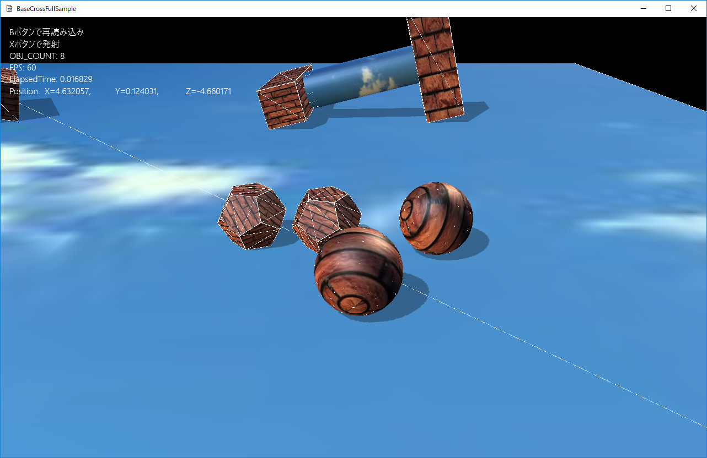

図1402a
void ActivePsConvex::OnCreate() {
if (!m_ConvexMesh || !m_PsConvexMesh) {
vector<VertexPositionNormalTexture> vertices;
vector<uint16_t> indices;
MeshUtill::CreateDodecahedron(0.5, vertices, indices);
m_ConvexMesh = MeshResource::CreateMeshResource(vertices, indices, false);
m_PsConvexMesh = PsConvexMeshResource::CreateMeshResource(vertices, indices);
}
auto PtrTransform = GetComponent<Transform>();
PtrTransform->SetScale(Vec3(1.0f));
PtrTransform->SetQuaternion(Quat());
PtrTransform->SetPosition(m_Position);
//影をつける
auto ShadowPtr = AddComponent<Shadowmap>();
ShadowPtr->SetMeshResource(m_ConvexMesh);
auto PtrDraw = AddComponent<BcPNTStaticDraw>();
PtrDraw->SetFogEnabled(true);
PtrDraw->SetMeshResource(m_ConvexMesh);
PtrDraw->SetTextureResource(L"WALL_TX");
//物理計算凸面
PsConvexParam param;
param.m_ConvexMeshResource = m_PsConvexMesh;
param.m_Mass = 1.0f;
//慣性テンソルの計算(球と同じにする)
param.m_Inertia = BasePhysics::CalcInertiaSphere(0.5f, param.m_Mass);
param.m_MotionType = PsMotionType::MotionTypeActive;
param.m_Quat = Quat();
param.m_Pos = m_Position;
auto PsPtr = AddComponent<RigidbodyConvex>(param);
PsPtr->SetDrawActive(true);
//親クラスのOnCreateを呼ぶ
SeekObject::OnCreate();
}
void ActivePsCombinedObject::OnCreate() {
auto PtrTransform = GetComponent<Transform>();
PtrTransform->SetScale(Vec3(1.0f));
PtrTransform->SetQuaternion(m_Qt);
PtrTransform->SetPosition(m_Position);
//合成オブジェクトの準備
PsCombinedParam param;
//質量は重くする
param.m_Mass = 3.0f;
//Box用の慣性（慣性テンソル）を計算
param.m_Inertia = BasePhysics::CalcInertiaBox(Vec3(2.5f, 1.0f, 1.0f), param.m_Mass);
param.m_MotionType = PsMotionType::MotionTypeActive;
param.m_Quat = m_Qt;
param.m_Pos = m_Position;
//合成されるプリミティブ（0番目、ボックス）
PsCombinedPrimitive primitive;
primitive.reset();
primitive.m_CombinedType = PsCombinedType::TypeBox;
primitive.m_HalfSize = Vec3(0.5f, 0.5f, 1.5f);
primitive.m_OffsetPosition = Vec3(-2.0f, 0.0f, 0.0f);
//合成オブジェクトに追加
param.AddPrim(primitive);
//合成されるプリミティブ（1番目、ボックス）
primitive.reset();
primitive.m_CombinedType = PsCombinedType::TypeBox;
primitive.m_HalfSize = Vec3(0.5f, 1.5f, 0.5f);
primitive.m_OffsetPosition = Vec3(2.0f, 0.0f, 0.0f);
//合成オブジェクトに追加
param.AddPrim(primitive);
//合成されるプリミティブ（2番目、カプセル）
primitive.reset();
primitive.m_CombinedType = PsCombinedType::TypeCapsule;
primitive.m_HalfLen = 1.5f;
primitive.m_Radius = 0.5f;
primitive.m_OffsetPosition = Vec3(0.0f, 0.0f, 0.0f);
//合成オブジェクトに追加
param.AddPrim(primitive);
//物理コンポーネント（合成）
auto PsPtr = AddComponent<RigidbodyCombined>(param);
PsPtr->SetDrawActive(true);
//物理コンポーネントに合わせて描画コンポーネント（影も）を作成
CreateDrawComp(param);
}